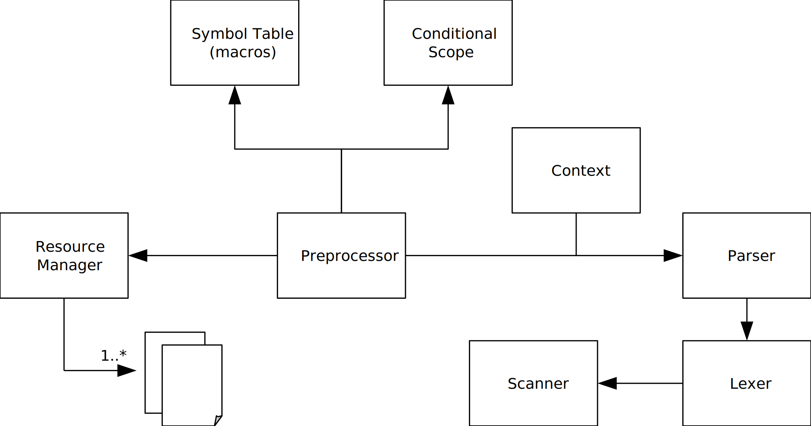

(work in progress)
Version ${project.version}
${system.date}
The preprocessor requires a properly tokenized input stream for the following cases:
This results in a set of three different types of preprocessing tokens:
Since the preprocessor should be independent of the language it is used for, it should not require language level tokens, but unfortunately, it can't.
The specification declares preprocessing tokens to be very basic. For example a number is just a sequence of digits, eventually containing a dot. This is not enough to distinguish e.g. between hexadecimal constants and identifiers. Given a hexadecimal constant such as 0xCAFFEE, a basic lexer would emit a number token '0' followed by an identifier token 'xCAFFEE'. If there was a defined macro with the same name, this would turn into a macro invocation, which is wrong. Thus, the preprocessor already requires a stream of language level tokens containing even special operators such as '->' or even '#!' to distinguish from its own preprocessing operators (# and ##). The same applies, when considering strings; the preprocessor must be able to distinguish the content of a string from everything else.
On the other hand, the preprocessor has to determine its own keywords such as 'defined' or 'include', but those aren't keywords of the language. Thus, the preprocessor has to investigate received identifier tokens based on the parsing context.
The set of language level tokens recognised by the preprocessor for C are these:
Those language level tokens will also be forwarded to the output.
To distinguish between directive lines and text, to distinguish a macro parameter list from the expansion list of a macro definition and to preserve white space characters in the output, the preprocessor will need those tokens additionally, to be emitted by the lower level lexer:
SOF and EOF are (both) especially needed to properly parse text inserted from includes (will be explained below).
To select and parse directives, the preprocessor will add directive tokens, which can only occur in directive lines. Those directive tokens contain the keywords of the directives and their context specific tokens:
Those tokens cannot be emitted by the lower level language token lexer, because they are context sensitive. Thus, the preprocessor must be able to select token sets based on context. Since most of the context specific tokens (if not all) are used in their respective directive only, there will be a parser for each directive, which reinterprets the tokens accordingly and emits new tokens if required (e.g. for text highlighting). This approach allows to add or remove directives (such as #include or options to #pragma).
Accordingly, there will be a parser for text sections which accepts listeners to be called on certain token types. This allows to add functionality such as macro expansion to the text parser.
Parsers may behave differently based on certain preprocessor output modes, which will be explained in a section below.
There three different cases to consider in respect to macro expansion:
If a macro invocation was identified in the text, the following procedure occurs:
Macro names in the expansion list will be considered when the preprocessor proceeds parsing the text.
Two important things:
Macro names contained in an expansion list will be considered only, when the macro containing it, was expanded to the text. The preprocessor then continues parsing the text, which now contains the inserted tokens of the previous expansion, preceding the remainder of the text. This way, the expansion list can for example reference another macro, which is not defined at the location of its definition, but before its invocation. Another example is, that the replacement list contains just the name of a macro, but the required arguments are in the text, following the macro invocation.
Macros cannot invoke itself. Thus, identifiers in the replacement list, which have the same name, are not interpreted as macro invocations, but treated as ordinary identifiers. To determine this case, the inserted tokens of an expansion list have to be associated with its originating macro definition, in some way.
Expansion of arguments is applied to the preprocessing tokens of that argument only. Compared to macro invocation execution, it does not include the following text, but behaves the same way in every other aspect.
Expansion of arguments occurs, only if the corresponding macro parameter is associated with one of the operators # and ## in the expansion list. In all other occurrences of the parameter, it is just replaced by the preprocessing tokens of the argument. Thus, the same parameter can be just replaced by the argument in one case, but replaced by its fully expanded tokens in the other.
An argument is fully expanded, if all contained macro invocations have been executed according to the exact same procedure explained above, but without the following text.
All preprocessing tokens in a directive line following #if or #elif up to the end of the line, have to be fully expanded the same way as macro arguments (i.e. not including the following text).
Conditional inclusion refers to use of #if etc. Each of it describes a scope of text lines and directive lines, which will be either included or excluded from parsing. Conditional scopes do affect visibility of declared symbols or macros. Macro definitions are always global, they just do not get parsed (and registered) in excluded scopes.
Directives involved in conditional inclusion are these:
A conditional scope is started with any #if... directive and ends with any of #else, #elif or #endif. Any #else or #elif scope ends the previous scope on whatever nesting level it was and starts a successor scope on the same nesting level. A sequence of conditional scopes on the same nesting level is ended by #endif. Nested conditional scopes have a parent scope.
Visibility of a conditional scope depends on:
Visibility of a conditional scope controls parsing. In excluded scopes only conditional directives will be parsed properly. All other lines, will be treated as text lines. In case of text tokenizing mode, tokens will be turned into excluded tokens and added to the tokenized output. All other modes will just skip tokens until a conditional directive was found.
To track scope sequences and scope nesting, the preprocessor always has to parse directive lines of conditional inclusion, even in excluded scopes.
The location of a token is required for
Generally, a location is defined by start and end position of a token in the input stream of an associated resource (e.g. file).
The preprocessor reads from multiple sources (ref. #include), and writes tokens to the output. Most of the tokens to the output are forwarded from the input, but there are several other cases:
Error reporting generally needs to point out the original location of an error, which requires to identify the input resource, and line and column in the input. Thus, a location gets associated with all of that.
Reporting of errors originating from macro expansion, additionally requires the location of the macro definition and the location of the corresponding characters in the replacement list, which was copied or transformed. Thus, another location type will be added for macro expanded locations. This macro expanded location is associated with the macro invocation, which in turn is associated with its macro definition. Additionally, file, line and column of the macro expanded location is a copy of the location of the origin of the corresponding token in the macro definition. Thus, the location of the macro invocation is the location, where the error occurred, but the given location of token in the replacement list might be the origin of the error.
Macro expansions may occur on top of each other (expanded text contains new macro invocations). As a consequence, macro expanded locations can be associated with a macro invocation, which has a macro expanded location. Thus, the location of the macro invocation received with a macro expanded token in an error report may not be the location of the error in the text. To retrieve the origin of an error, the macro expanded location of macro invocations has to be followed recursively until a macro invocation with an ordinary location in the text was found.
Location getErrorCauseLocation(Location start) {
Location start = token.getStart();
while (start instanceof MacroExpandedLocation) {
start = ((MacroExpandedLocation)location).getMacroInvocation().getStart();
}
// start is now the location of the first macro invocation, which caused the error
return start;
}
There is an alternative solution to this approach, which would be to let the macro expanded location already point to the cause of the error (i.e. the macro invocation), which could reduce the processing effort in error reporting. To find the original token in the expansion list, this approach would require the macro expanded location to be associated additionally with the location of the original token and the macro invocation as well. When multiple macro expansions occurred on top of each other, the error token had to point to the location of the first macro invocation and it had to be associated with the original token in its own macro definition. This is still not enough to keep track of the sequence of macro expansions which lead to the error. Thus, in this approach, a macro expanded location had to be additionally associated with its macro invocation. Considering that error reporting is not the general case, and location tracking is already expensive in terms of memory and processing, the fist approach was chosen.
There are more alternative approaches not mentioned here, which are either more expensive or cause the API to be error prone.
There are different output types required to be generated by the preprocessor, based on use cases:
For runtime preprocessing, the preprocessor executes and removes just selected directives and writes the text of generated tokens into an output stream.
There are tasks that can be performed in this mode, but some directives have to be left in the output.
The preprocessor can perform the following tasks only:
To keep track of errors reported by an external GLSL compiler, those tasks need to add appropriate #line directives in this mode.
Macro expansion cannot be performed, since the expansion may change locations of tokens (column and row) and reported errors of an external GLSL compiler cannot be located properly.
The following directives will be parsed but not fully executed or removed from output:
Note: This functionality is useful only, if the include directive is used. Otherwise, the preprocessor of the compiler will be probably faster.
All tokens of text sections will be forwarded to the output sink. Those can be buffered and filtered by the output sink (such as removing all whitespace tokens). All tokens of directive lines will be removed. #line directives will be fully considered to adjust locations of tokens accordingly.
This mode is useful for text highlighting. Since the preprocessor parses the tokens anyway, it can generate a sequence of tokens according to original input without actual preprocessing. That means, that given tokens always map to its original location in the input. Macro expansion is not performed, and thus there are no macro expanded locations.
The output contains:
Text tokenizing requires
To achieve (1), the lexer of the original input resource will provide TextTokenizerListener capabilities. All committed tokens will be forwarded to the listener.
Regarding (2), the row and column of tokens may refer to different locations in respect to #line directives. But the position (see Location.getPosition()) will always be the original offset in the input stream.
Forwarded token instances will be identical (same memory) to the tokens used by the language parser and will be enriched with links to symbol references identified by the parser (e.g. identifiers of functions will refer to the function).
Error handling has to be consistent over all components such as scanner, lexer, preprocessor and language parser.
There are two strategies to handle syntax errors:
The second strategy is useful in case of text highlighting but almost useless otherwise. Most of the time errors lead to subsequent parsing errors and only the first error in a file is an actual syntax error. This is due to the fact, that error recovery is quite complex. However, error handling will support both error strategies.
Error reporting occurs in two flavours:
Error handler will be the component which receives error reports and decides whether to proceed or exit.
Any syntax error is reported to the error handler using the token, which caused the error and an explanatory message. The return value of the error handler on that report decides whether the parser aborts or performs error recovery and proceeds parsing.
In case of an abort due to an error, the parser will immediately stop parsing, discard all results and return to API callers context.
Error recovery occurs only if the error handler decides to proceed and consists of two tasks:
The easiest way to recover from an error in a language parser is to search for the start of the next bigger parse rule such as a sentence or a statement with a prefix token set, which differs significantly from other prefix token sets. All tokens up to that location should be ignored, because most of the time those tokens just cause false positives.
The preprocessor will have to differentiate, whether the error occurs in a directive line or in text (e.g. macro expansion). In directive lines, recovery will skip to the end of the line. In text (i.e. in macro invocation expressions), recovery will skip to the next token only.
Minimum input for the language parser is the sequence of preprocessed language tokens of the preprocessor.
Main task of the preprocessor is to parse preprocessed tokens and call listeners on matching parser rules.
Symbol table is useful, to lookup symbols without having the text tokens.
Requires symbol table of the preprocessor.
Symbol Table contains declarations of all:
Generated symbol table provides lookup of a symbol declaration for a given location (see above).
Lookup has to consider macro expanded locations
Text tokenizing is useful for text highlighting in IDEs. Lookup of symbols is much easier, because they are already associated with their declaration.
Parser receives tokenized text of the preprocessor and exchanges certain tokens by higher level language tokens, unknown to the language parser.
Higher level language tokens are:
Symbol tokens (function, variable, type) are associated with their declaration. The declarations provides information whether the symbol is a builtin symbol or not.

The preprocessor controls preprocessing. It selects rules and delegates parsing to them. For parsing the parser of the rule gets the Context object, which contains a Lexer, the list of Output Generators, the Symbol Table and the Conditional Scope.
Scanner reads an input stream and keeps track of the location in the input stream. This includes resource identifier, line, column and position in the stream.
Line and source identifier may be manipulated by #line directives.
Scanner may read lookaheads but cannot rewind consumed characters.
Lexer is context sensitive.
Lexer uses a Scanner to transform the input in a sequence of language and separator tokens on demand and for a given context.
The lexer has a set of Lexer Rules which perform the lexical analysis of the input received from the scanner.
The location of generated tokens is received from the Scanner and can be influenced (e.g. by #line directives).
The lexer provides a method to receive the n-th lookahead token. Lookahead tokens are ordinary tokens, but without location attributes. For each lookahead token, the lexer stores information on their relative position (scanner lookahead) and number of items read (not consumed). Location is assigned once the token was actually consumed. Lookahead tokens will be stored until either consumed or invalidated.
Tokens are usually read from the scanner. To support macro expansion, the lexer also allows to prepend tokens to the stream of the scanner. Preprended tokens are stored in a queue. Certain methods behave differently, when prepended tokens exist in the queue:
Method prepend is meant to be used in macro expansion to prepend the tokens of the expansion list to the front of the queue.
A Lexer Rule provides methods to perform lexical analysis on given input (Scanner) and generate lookahead tokens. Lexer rules are independent of each other and not context sensitive.
Generated lookahead tokens do not have a location.
Lexer rules are supposed to be derived from a common base class LexerRule.
Stores information about a lookahead token using the following attributes:
A filtering lexer is used to filter tokens received from another lexer.
Token filter have the same methods as the Lexer.
A parser rule implements a given parser rule. It is responsible to parse tokens of a Lexer according to its rule and based on the given context. It reports syntax errors to the error handler, reports results to its listeners and updates the context (symbol table, conditional scope).
There are parsers for the following rules:
Parser listeners generate output of parser rules.
Tokens of the argument will be given to a private lexer, and then presented to a Text parser for expansion. Result of the text parser will be captured using a different output sink.
Iterates through the expansion list and
Assigned macro expanded locations are copies of the given location in macro definition with the macro invocation expression added.
Locations of tokens generated by operators # and ## refer to the locations of the involved parameter references in the replacement list.
The concatenated tokens will be presented to a private Text lexer to generate a joined token. If there is no match to any of the regular text token rules, it is replaced by an error token and the error will be reported.
Subsequent tokens to #if or #elif upto CRLF/EOF will be presented to a Text parser for expansion, before it gets parsed into an expression. The text parser usually forwards a sequence of output tokens to the output sink. The expression parser will use an the output sink to store the result of the text parser. The text parser always stops at the next CRLF/EOF. So the received tokens are the tokens of the remainder of the line. The received tokens then will be added to a private lexer, which is used to parse the expression. If the lexer is not empty after the expression was fully consumed, it indicates an expression error "unexpected tokens".
Includes require preprocessing the entire content of another file using the current preprocessor state (symbol table, scope, etc.).
Includes will instantiate a new lexer and scanner and call process() on the preprocessor. When the process() method returns, it resets to the previous lexer.
Line directives may change line and source identifier of all locations of subsequent tokens only of the resource, where they occurred. This does not affect macro expanded tokens.
Execution of a line directive involves a call to lexer.setLocation().
Modes:
Error Types:
| Error Type | Reference | Explanation |
|---|---|---|
| Lexer Errors: | ||
| Missing item inside token | Location | (such as end terminator of strings) |
| Wrong item inside token | Location | (such as a non-existing escape sequence in strings) |
| Unknown prefix-items | Token | (any character, which does not exist in the language) |
| Parser Errors: | ||
| Missing token | previous.end | (a different token was expected such as TPunctuator instead of TEof) |
| Unexpected token | Token | (such as tokens after a conditional expression) |
| Unknown Token | Token | (received from lexer due to unknown prefix items) |
Lexer:
Missing or wrong items only occur inside already identified tokens.
Unkown prefix-items have to be emitted as TUnknown tokens, derived from TWhitespace.
None of the lexer errors is supposed to affect the parser.
Parser:
Missing and unexpected tokens can be recovered in this way:
Recovery from missing tokens may also jump to the next token, but risks to get into follow-up errors and false-positives or redundant error reporting. Thus, skipping to the next safe point is more beneficial.
Max supported version can be queried via
glGetStringi(GL_SHADING_LANGUAGE_VERSION)
Each GLSL version has a set of unique properties:
All GLSL versions have a set of common properties:
This results in a set of version specific tokens and symbols, which are stored in instances of those two classes:
Both are required in different stages of the translation process (preprocessing and language parsing). TokenTable is used by the PPOutputSink, which converts received tokens into language parser tokens. SymbolTable is used by the preprocessor to identify builtin macros and by the language parser to identify builtin types, functions and variables.
Maintenance should be kept simple to allow simple adaption to new versions. It is common practice to use the capabilities of a compiler to declare all builtin symbols using the language itself. Thus, the builtin table will be initialised with glsl source code, which contains all declaration statements and #define directives of that version, which will be called 'preamble'. The only exception are scalar builtin types (int, float, bool etc. and void).
Parsing of the preamble requires a few preconditions:
All language tokens recognised by the language parser have a specific mapping to a language parser token type. The TokenTable just has to decide, which language tokens are actually used as keywords, reserved keywords or builtin types. The latter will be identified using the builtin symbol table.
Valid language tokens are split into keywords and reserved keywords. For each version there will be two files, which contain each a whitespace separated list of (reserved) keywords of that version. All token locations of the preamble will have a special source identifier (<0) to differentiate them from user source code.
The preamble contains #define directives and declarations of builtin symbols.
For each version X exists:
Usual builtin macros such as __VERSION__, GL_compatibility_profile, etc. will be added to the preamble.glsl.
Special builtin macros such as __LINE__ and __FILE__ require a specific implementation and will be added by the preprocessor.
Extensions are generally extensions to a specific version of the GLSL specification, but they may support even previous versions, if the required features are available (e.g. through other extensions).
Extensions may define additional features for glsl:
Extensions have dependencies on features of
Extensions may conflict with
Due to the fact, that equivalent extensions can be mutually exclusive a specific GLSL version and profile can have multiple sets of valid extension combinations. This is the reason, why the preprocessor directive
#extension all : enable
is invalid.
The hardware provides a list of _all_ extensions supported by it.
int num = glGetIntegerv(GL_NUM_EXTENSIONS) glGetStringi(GL_EXTENSIONS, index)
Before loading an extension, the following requirements have to be checked:
If one of the above requirements is not met, the load gets aborted, warning is reported and the translation continues.
We are interested only in extensions which modify/extend GLSL. Those modifications are mainly introductions of new:
In respect to the main goals of this project, 'disabling' extensions isn't really a critical feature. An extension can be enabled only, if it is supported by the current compiler state. Once enabled, the features of the extension are available to the user level code. Disabling it would (at least) require to report syntax errors in the user level code, where those features are used. This however, requires a lot of effort to keep track of state changes and dependencies between loaded extensions. The extension has to enabled/disabled during preprocessor and parser run. Both are currently separate, and the parser would require to know, at which locations in the sequence of received tokens extensions got enabled or disabled.
Since the main goal is to support parsing (not validating) the code, there is no real benefit in implementing this functionality. Thus (for now), extensions that have been enabled, will never been disabled, and the features of the extension will stay available to user level code. A vendor specific GLSL compiler or the Khronos reference implementation can be used, to actually validate the syntax.
Extension States:
An extension can be loaded only if it is known and supported (Available). This means, the extension name is known and there is an implemented procedure to load it. An extension is loaded, if the preprocessor has at some point processed an #extension directive related to the extension with behaviour 'enable' or 'require'. Once loaded, an extension can be enabled. All successfully loaded extensions stay in the compiler global state until unloaded. Thus, an enabled extension will return to Loaded when disabled. All extensions will be unloaded once the compiler run is finished.
Extensions will be declared by a set of files in a directory <extension-name>, equivalent to the files for profiles:
Properties file has the following content:
{
"names" : ["GL_EXT_example"], // name strings of the extension (may have more than one)
"prefix" : "EXT", // extension's prefix (classifies extensions)
"number" : 58, // number of the extension (in relation to prefix)
"dependencies" : { // optional
"all":[ // all top level dependencies must be met
"core:[110,150]", // requires core profile in version 110-150
"EXT_dep1", // 1st mandatory dependency
{"any":[ // 2nd dependency is set of optional dependencies (one is required)
"EXT_dep2_opt1", // 1st option of the 2nd dependency
{"any":[ // 2nd option of the 2nd dependency (another set of options, 1 required)
"EXT_dep2_opt2_opt1",
"EXT_dep2_opt2_opt2"
]},
{"all":[ // 3rd option of the 2nd dependency (group of dependencies, all required)
{"any":[
"EXT_dep2_opt3_dep1",
"EXT_dep2_opt3_dep2",
{"any":[ // set of options for the 3rd member of the dependencies group
"EXT_dep2_opt3_dep3_opt1",
"EXT_dep2_opt3_dep3_opt2"
]}
]}
]}
]}
]
}
"conflicts" : [ // list of all conflicting extensions
"EXT_conflict1",
"EXT_conflict2"
]
}